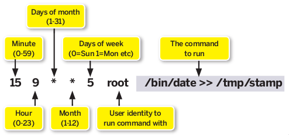
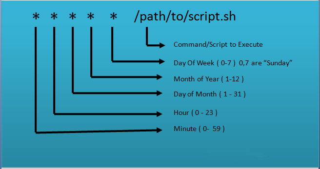
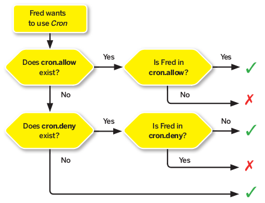

<!DOCTYPE html>
<html xmlns="http://www.w3.org/1999/xhtml" lang="" xml:lang="">
    <head>
        <meta charset="utf-8" />
        <meta name="generator" content="markdown-it" />
        <meta name="viewport" content="width=device-width, initial-scale=1.0, user-scalable=yes" />
        <meta name="author" content="runner" />
        <meta name="dcterms.date" content="2025-04-09 13:28:34.528" />
        <title>cron</title>
        <style type="text/css">
            code {
                white-space: pre-wrap;
            }
            span.smallcaps {
                font-variant: small-caps;
            }
            span.underline {
                text-decoration: underline;
            }
            div.column {
                display: inline-block;
                vertical-align: top;
                width: 50%;
            }
        </style>
        <style type="text/css">
            a.sourceLine {
                display: inline-block;
                line-height: 1.25;
            }
            a.sourceLine {
                pointer-events: none;
                color: inherit;
                text-decoration: inherit;
            }
            a.sourceLine:empty {
                height: 1.2em;
            }
            .sourceCode {
                overflow: visible;
            }
            code.sourceCode {
                white-space: pre;
                position: relative;
            }
            div.sourceCode {
                margin: 1em 0;
            }
            pre.sourceCode {
                margin: 0;
            }
            @media screen {
                div.sourceCode {
                    overflow: auto;
                }
            }
            @media print {
                code.sourceCode {
                    white-space: pre-wrap;
                }
                a.sourceLine {
                    text-indent: -1em;
                    padding-left: 1em;
                }
            }
            pre.numberSource a.sourceLine {
                position: relative;
                left: -4em;
            }
            pre.numberSource a.sourceLine::before {
                content: attr(title);
                position: relative;
                left: -1em;
                text-align: right;
                vertical-align: baseline;
                border: none;
                pointer-events: all;
                display: inline-block;
                -webkit-touch-callout: none;
                -webkit-user-select: none;
                -khtml-user-select: none;
                -moz-user-select: none;
                -ms-user-select: none;
                user-select: none;
                padding: 0 4px;
                width: 4em;
                background-color: #ffffff;
                color: #a0a0a0;
            }
            pre.numberSource {
                margin-left: 3em;
                border-left: 1px solid #a0a0a0;
                padding-left: 4px;
            }
            div.sourceCode {
                color: #1f1c1b;
                background-color: #ffffff;
            }
            @media screen {
                a.sourceLine::before {
                    text-decoration: underline;
                }
            }
            code span {
                color: #1f1c1b;
            } /* Normal */
            code span.al {
                color: #bf0303;
                background-color: #f7e6e6;
                font-weight: bold;
            } /* Alert */
            code span.an {
                color: #ca60ca;
            } /* Annotation */
            code span.at {
                color: #0057ae;
            } /* Attribute */
            code span.bn {
                color: #b08000;
            } /* BaseN */
            code span.bu {
                color: #644a9b;
                font-weight: bold;
            } /* BuiltIn */
            code span.cf {
                color: #1f1c1b;
                font-weight: bold;
            } /* ControlFlow */
            code span.ch {
                color: #924c9d;
            } /* Char */
            code span.cn {
                color: #aa5500;
            } /* Constant */
            code span.co {
                color: #898887;
            } /* Comment */
            code span.cv {
                color: #0095ff;
            } /* CommentVar */
            code span.do {
                color: #607880;
            } /* Documentation */
            code span.dt {
                color: #0057ae;
            } /* DataType */
            code span.dv {
                color: #b08000;
            } /* DecVal */
            code span.er {
                color: #bf0303;
                text-decoration: underline;
            } /* Error */
            code span.ex {
                color: #0095ff;
                font-weight: bold;
            } /* Extension */
            code span.fl {
                color: #b08000;
            } /* Float */
            code span.fu {
                color: #644a9b;
            } /* Function */
            code span.im {
                color: #ff5500;
            } /* Import */
            code span.in {
                color: #b08000;
            } /* Information */
            code span.kw {
                color: #1f1c1b;
                font-weight: bold;
            } /* Keyword */
            code span.op {
                color: #1f1c1b;
            } /* Operator */
            code span.ot {
                color: #006e28;
            } /* Other */
            code span.pp {
                color: #006e28;
            } /* Preprocessor */
            code span.re {
                color: #0057ae;
                background-color: #e0e9f8;
            } /* RegionMarker */
            code span.sc {
                color: #3daee9;
            } /* SpecialChar */
            code span.ss {
                color: #ff5500;
            } /* SpecialString */
            code span.st {
                color: #bf0303;
            } /* String */
            code span.va {
                color: #0057ae;
            } /* Variable */
            code span.vs {
                color: #bf0303;
            } /* VerbatimString */
            code span.wa {
                color: #bf0303;
            } /* Warning */
        </style>
        <!--
  Firefox non carica font da locale quindi il font può non essere visibile
  quando di carica la pagina da locale.
  Bisogna impostare about:config
    security.fileuri.strict_origin_policy = false
  -->
        <link rel="stylesheet" href="../../inc/css/katex.min.css" />
        <link rel="stylesheet" href="../../inc/css/fonts/google_fonts.css" />
        <!-- <link href="https://cdn.jsdelivr.net/npm/bootstrap@5.3.0-alpha1/dist/css/bootstrap.min.css" rel="stylesheet" integrity="sha384-GLhlTQ8iRABdZLl6O3oVMWSktQOp6b7In1Zl3/Jr59b6EGGoI1aFkw7cmDA6j6gD" crossorigin="anonymous"> -->
        <link rel="stylesheet" href="../../inc/css/bootstrap.min.css" />
        <link rel="stylesheet" href="../../inc/css/cdp.css" />
        <!--[if lt IE 9]>
            <script src="//cdnjs.cloudflare.com/ajax/libs/html5shiv/3.7.3/html5shiv-printshiv.min.js"></script>
        <![endif]-->
        <meta name="keywords" content="Appunti,Note" />
        <meta name="description" content="Appunti di runner" />
        <link rel="icon" type="image/x-icon" href="../../inc/img/favicon.ico" />
        <link rel="shortcut icon" type="image/x-icon" href="../../inc/img/favicon.ico" />

        <link rel="stylesheet" href="../../inc/js/hljs/styles/default.css" />
        <script src="../../inc/js/hljs/lib/highlight.js"></script>
        <script src="../../inc/js/bootstrap/bootstrap.bundle.min.js"></script>
        <!-- <script src="https://cdn.jsdelivr.net/npm/bootstrap@5.3.0-alpha1/dist/js/bootstrap.bundle.min.js" integrity="sha384-w76AqPfDkMBDXo30jS1Sgez6pr3x5MlQ1ZAGC+nuZB+EYdgRZgiwxhTBTkF7CXvN" crossorigin="anonymous"></script> -->
        <script>
            hljs.initHighlightingOnLoad();
        </script>
        <script type="module">
            import mermaid from '../../inc/js/mermaid/dist/mermaid.esm.min.mjs';
            // import mermaid from 'https://cdn.jsdelivr.net/npm/mermaid@10/dist/mermaid.esm.min.mjs';
            mermaid.initialize({ startOnLoad: true });
        </script>
    </head>
    <body></body>
</html>
<h1 id="cron" tabindex="-1">cron <a class="header-anchor" href="#cron" aria-hidden="true">🔗</a></h1>
<p class="code">2025-04-09 13:28:34.528</p>
<nav class="table-of-contents"><ol><li><a href="#formato-file-%2Fetc%2Fcrontab">Formato file /etc/crontab </a></li><li><a href="#%2Fetc%2Fcron.d">/etc/cron.d </a></li><li><a href="#%2Fvar%2Fspool%2Fcron%2Fcrontabs">/var/spool/cron/crontabs </a><ol><li><a href="#fields-in-%2Fvar%2Fspool%2Fcron%2Fcrontabs-(non-c'e'-il-campo-utente)">Fields in /var/spool/cron/crontabs (Non c&#39;e&#39; il campo utente) </a></li></ol></li><li><a href="#can-fred-use-cron%3F">Can Fred use cron? </a></li><li><a href="#execution-environment">Execution Environment </a></li></ol></nav><h1 id="cron-1" tabindex="-1">cron <a class="header-anchor" href="#cron-1" aria-hidden="true">🔗</a></h1>
<p>cron is a daemon that arranges for commands to be run at specific times of day, and/or specific days of the week.
It works by waking up once every minuteand consulting its configuration files known as crontabsto see if anything is scheduled to run that minute. If so, it executes the appropriate shell command. Then it goes back to sleep for another minute. Cron itself is normally started at boot time.</p>
<pre><code class="language-bash">$ man 5 crontab
</code></pre>
<p>There are several ways of specifying multiple date/time values in a field:</p>
<ul>
<li>The comma (<mark><code>,</code></mark>) operator specifies a list of values, for example: &quot;1,3,4,7,8&quot;</li>
<li>The dash (<mark><code>-</code></mark>) operator specifies a range of values, for example: &quot;1-6&quot;, which is equivalent to &quot;1,2,3,4,5,6&quot;</li>
<li>The asterisk (<mark><code>*</code></mark>) operator specifies all possible values for a field. For example, an asterisk in the hour time field would be equivalent to 'every hour' (subject to matching other specified fields).</li>
</ul>
<p>There is also an operator which some extended versions of cron support, the slash ('/') operator (called &quot;step&quot;), which can be used to skip a given number of values. For example, &quot;<em>/3&quot; in the hour time field is equivalent to &quot;0,3,6,9,12,15,18,21&quot;.
So &quot;</em>&quot; specifies 'every hour' but the &quot;*/3&quot; means only those hours divisible by 3.
Example:the following will clear the Apache error log at one minute past midnight each day.</p>
<pre><code class="language-bash">01 00 * * * <span class="hljs-built_in">echo</span> <span class="hljs-string">&quot;&quot;</span> &gt; /www/apache/logs/error_log
</code></pre>
<h2 id="formato-file-%2Fetc%2Fcrontab" tabindex="-1">Formato file /etc/crontab <a class="header-anchor" href="#formato-file-%2Fetc%2Fcrontab" aria-hidden="true">🔗</a></h2>
<p></p>
<p></p>
<p>Instead of the first five fields, one of eight special strings may appear:</p>
<table class="table"><thead>
<tr>
<th style="text-align:left">string</th>
<th style="text-align:left">meaning</th>
</tr>
</thead>
<tbody>
<tr>
<td style="text-align:left">@reboot</td>
<td style="text-align:left">Run once, at startup.</td>
</tr>
<tr>
<td style="text-align:left">@yearly</td>
<td style="text-align:left">Run once a year, &quot;0 0 1 1 *&quot;.</td>
</tr>
<tr>
<td style="text-align:left">@annually</td>
<td style="text-align:left">same as @yearly</td>
</tr>
<tr>
<td style="text-align:left">@monthly</td>
<td style="text-align:left">Run once a month, &quot;0 0 1 * *&quot;.</td>
</tr>
<tr>
<td style="text-align:left">@weekly</td>
<td style="text-align:left">Run once a week, &quot;0 0 * * 0&quot;.</td>
</tr>
<tr>
<td style="text-align:left">@daily</td>
<td style="text-align:left">Run once a day, &quot;0 0 * * *&quot;.</td>
</tr>
<tr>
<td style="text-align:left">@midnight</td>
<td style="text-align:left">same as @daily</td>
</tr>
<tr>
<td style="text-align:left">@hourly</td>
<td style="text-align:left">Run once an hour, &quot;0 * * * *&quot;.</td>
</tr>
</tbody>
</table>
<h2 id="%2Fetc%2Fcron.d" tabindex="-1">/etc/cron.d <a class="header-anchor" href="#%2Fetc%2Fcron.d" aria-hidden="true">🔗</a></h2>
<p>cron reads the files in <code>/etc/cron.d</code>: it treats the files in <code>/etc/cron.d</code>
as in the same way as the <code>/etc/crontab</code> file (they follow the special format of that file,
i.e. they include the user field).
However, they are independent of <code>/etc/crontab</code>: they do not, for example, inherit environment variable settings from it.
The intended purpose of this feature is to allow packages that require
finer control of their scheduling than the /etc/cron.{daily,weekly,monthly} directories
to add a crontab file to <code>/etc/cron.d</code></p>
<h2 id="%2Fvar%2Fspool%2Fcron%2Fcrontabs" tabindex="-1">/var/spool/cron/crontabs <a class="header-anchor" href="#%2Fvar%2Fspool%2Fcron%2Fcrontabs" aria-hidden="true">🔗</a></h2>
<p>In addition to the system-wide <code>/etc/crontab</code>, Vixie Cron lets each user have their own crontab.
These are stored in files named after the user's login under <code>/var/spool/cron/crontabs</code> (the exact location varies between distros).
These files have the same format as the system-wide Cron with one exception:
<strong class="b">there is no user ID column</strong>, because individual users are only allowed to run Cron jobs as themselves.</p>
<p>You are not allowed to edit these files directly; you need to run <code>crontab -e</code>, which will open the file for you and drop you into the editor of your choice (actually, the editor specified by the EDITOR environment variable) to edit it. Why the crontab -e wrapper?
Well, for one thing, it checks the syntax of your new entries before installing them, and for another, it jiggles the timestamp on the spool directory to tell Cron that one of the Cron files has been changed. (Unusually for a Linux daemon, there is no need to signal Cron after you've edited the config file, it will automatically notice the next time it wakes up.)</p>
<p>Administrators of multi-user systems can control who is allowed to use cron by placing user names in one of two files,
<code>/etc/cron.allow</code> and <code>/etc/cron.deny</code>.
The Can Fred Use Cron example in the box overpage shows the logic used to make this decision. This facility was probably more useful back in the days of true multi-user machines with many accounts; it is less relevant on machines that support only one or two users.</p>
<h3 id="fields-in-%2Fvar%2Fspool%2Fcron%2Fcrontabs-(non-c'e'-il-campo-utente)" tabindex="-1">Fields in <code>/var/spool/cron/crontabs</code> (Non c'e' il campo utente) <a class="header-anchor" href="#fields-in-%2Fvar%2Fspool%2Fcron%2Fcrontabs-(non-c'e'-il-campo-utente)" aria-hidden="true">🔗</a></h3>
<pre><code># .---------------- minute (0 - 59)
# | .------------- hour (0 - 23)
# | | .---------- day of month (1 - 31)
# | | | .------- month (1 - 12) OR jan,feb,mar,apr ...
# | | | | .---- day of week (0 - 6) (Sunday=0 or 7) OR sun,mon,tue,wed,thu,fri,sat
# | | | | |
* * * * * command to be executed
</code></pre>
<h2 id="can-fred-use-cron%3F" tabindex="-1">Can Fred use cron? <a class="header-anchor" href="#can-fred-use-cron%3F" aria-hidden="true">🔗</a></h2>
<p></p>
<h2 id="execution-environment" tabindex="-1">Execution Environment <a class="header-anchor" href="#execution-environment" aria-hidden="true">🔗</a></h2>
<p>One aspect of Cron I've ignored up to now is <strong>the environment that Cron jobs run in</strong>.
<strong>A regular user's Cron jobs run with their current directory set to that user's home directory</strong>,
and as we've already noted, they run with that user's identity.
The number of environment variables defined will be minimal.</p>
<p><span class="mrb">Cron does not read a user's login scripts to establish user-specific settings</span>, and in particular the search path contains only /usr/bin and /bin, so you need to take care when running commands from your crontab ? in fact, it's common practice to refer to commands by their full path name to be sure they will be found.</p>
<p>It's also common practice to redirect the standard output and standard error of a Cron job to a file, so you'll often see entries in a crontab along these lines:</p>
<pre><code>15 6 * * * /usr/bin/someprog &gt;/tmp/someprog.out 2&gt;&amp;1
</code></pre>
<p><span class="mrb">If a Cron job generates output that is not redirected, that output will be mailed to the job's owner.</span></p>
<p>You can define your own environment variables in your crontab if you want. For example, you could specify which shell will be used to interpret the command, and extend your search path with lines like this:</p>
<pre><code>SHELL=/bin/bash
PATH=/usr/bin:/bin:/usr/local/bin
</code></pre>
<p>If, like me, you learn by experimentation, you will probably want to try out a few Cron entries of your own at this stage, but if you need some suggestions, try an experiment something like this:</p>
<ul>
<li>
<p>Run <code>crontab -e</code>, and in your crontab file place the following:</p>
<p>FOO=BAR
PATH=/usr/bin:/bin:/usr/chris/bin
*/5 * * * * env &gt;&gt; env.out
*/10 * * * * echo &quot;hello from a cron job&quot;
30 * * * * wget <a href="http://metoffice.gov.uk/satpics/latest_ir.jpg">http://metoffice.gov.uk/satpics/latest_ir.jpg</a></p>
</li>
<li>
<p>Verify that your crontab is correctly installed with the command crontab -l.</p>
</li>
<li>
<p>Find something else to do for an hour...</p>
</li>
<li>
<p>At the end of the hour, verify that you have a file called *<em>env.out</em> in your home directory. It should contain multiple identical copies of the Cron job's environment preceded by timestamps at five-minute intervals. Do you see the environment variables that you defined in your crontab?</p>
</li>
<li>
<p>Read your mail (by which I don't mean you to pull mail from your POP3 maildrop with Evolution, I mean you to run the mail command on the command line to examine your local mail file). Do you see the messages from the Cron job? They should appear every ten minutes.</p>
</li>
<li>
<p>Did you get the infrared satellite image? (If necessary, wget will automatically append a number to the filename to avoid overwriting the same file each time, so you may get names like latest_ir.jpg.1, latest_ir.jpg.2 and so on.) Verify that England is entirely covered with thick cloud. If it is not, you may have retrieved an image of some other part of the world by mistake.</p>
</li>
<li>
<p>Unless you want to keep your crontab, delete it with the command crontab -r.</p>
</li>
</ul>
<p>The first crontab entry in our experiment simply confirms the environment that a crontab job runs with. The second entry shows that if a crontab job generates output that is not redirected to a file, that output is mailed to the user. And the third entry demonstrates how to collect an infrared satellite image every hour.</p>
</body></html>